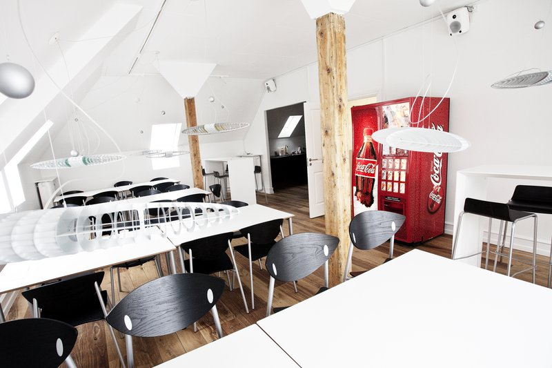
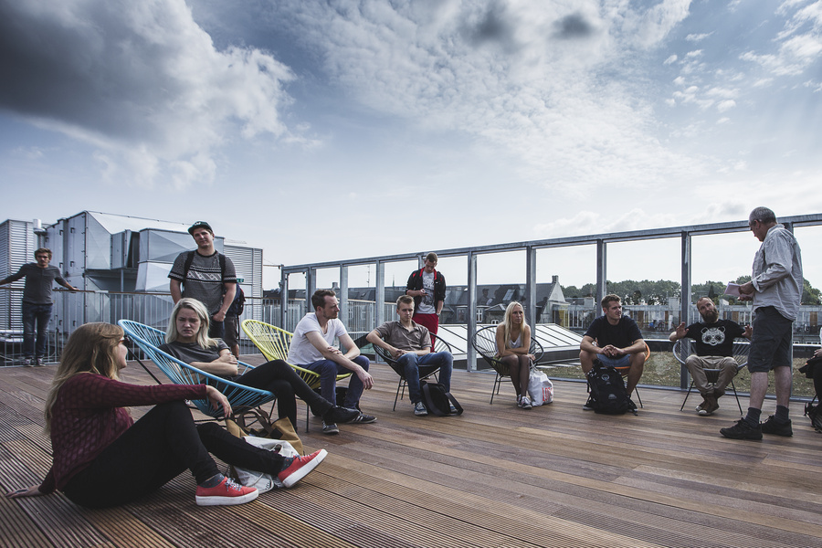
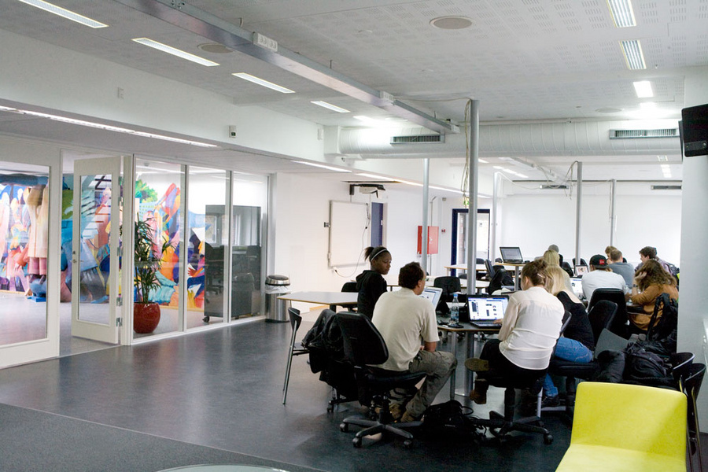
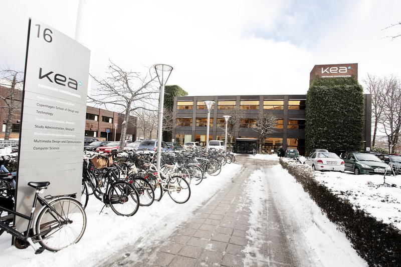
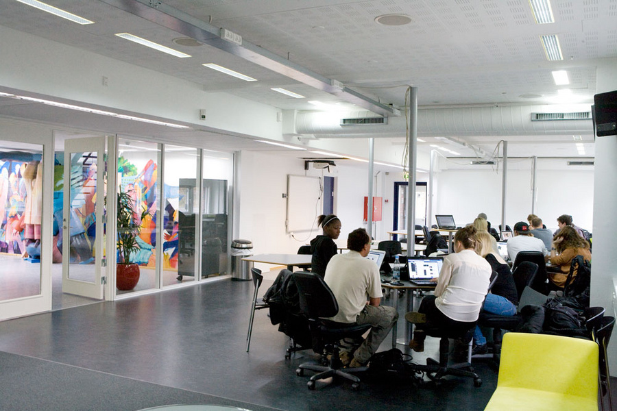
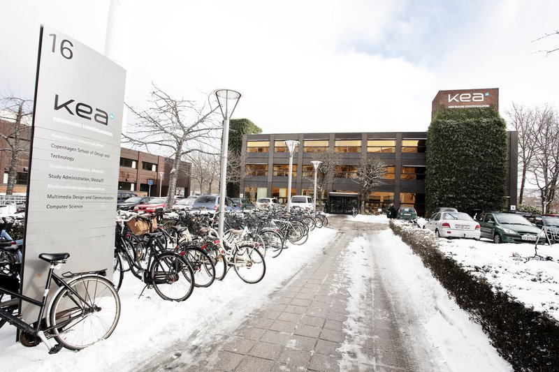
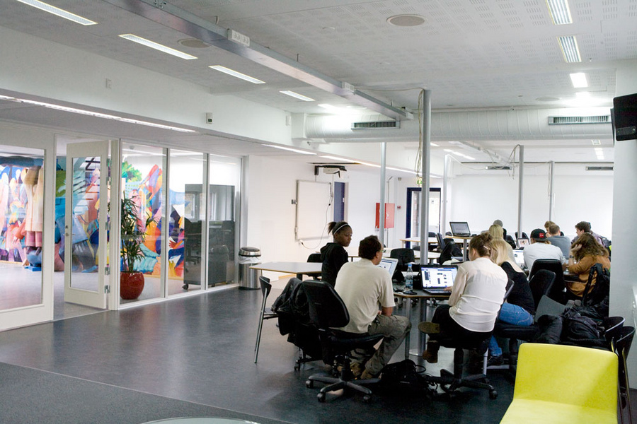
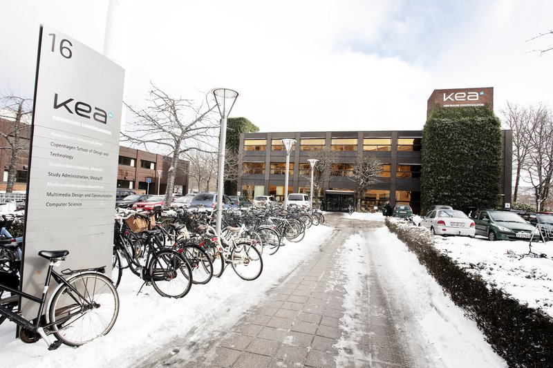
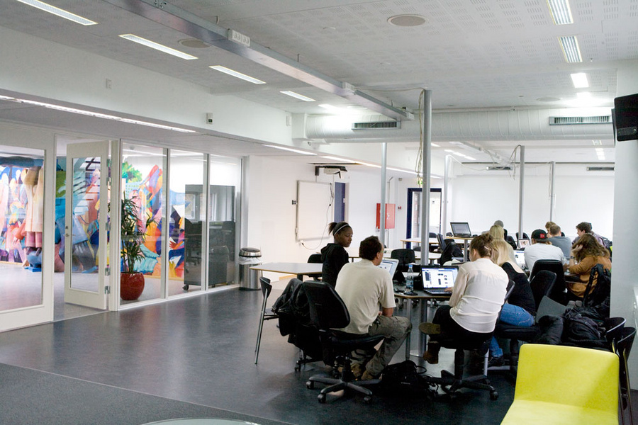
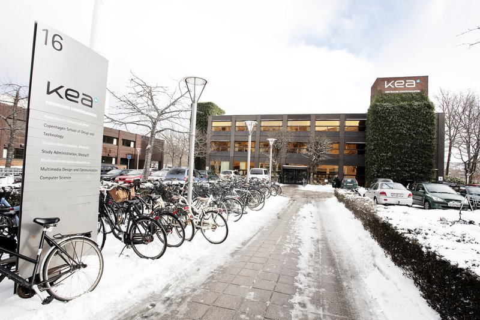

 









blablbalba the core areas are nice
x
Summary = use key theories, tools and methods for design and development of simple digital user interfaces. Apply key design processes, including the documentation of design process. Apply basic compositional/layout and digital visual design principles in MMD. Understand media types and current digital exchange formats used in MMD.
Examples = gestalt laws, contrast (colour, typography), colour theory, typography. Moodboard, style tile, style guide.
Summary = structure and use of the internet, with special emphasis on understanding client-server relationships and their impact on the dev. Of digital user interfaces. Relevant technologies, central methods for modelling, structuring and developing digital user interfaces. Use/manage key technologies and methods of version control?? for a MMD production. Develop simple user interfaces.
Examples = Basic HTML, Basic CSS, Basic Javascript
Summary = Understand different types of digital media, f.x. Websites, animations, videos, games, apps, etc. Central theory and central test methods for user understanding, digital content and multimedia production - user tests (tests executed on potential users of a product to find out if it works, if it’s relevant and needed, what can be improved, what isn’t relevant, etc. Individual testing, group testing, interviews, etc. Plan and conduct user testing and then produce content based on user understanding.
Examples = 5 second test, Think a loud, focus group, heuristic, expert review, peer review, interview, individual etc.
Summary = use key theories, methods and tools for planning, developing and managing a simple multimedia production. Copyright and licensing methods in multimedia production (legal parameters). Companies strategy as a basis for multimedia production and the multimedia designer’s position in the value chain???
Examples = Business Model Canvas, Communication Plan, Report (writing)
x
Summary = relevant theories, tools, methods and rules for the design and dev.. Of user-oriented design and user experiences. Methods for presenting data. Apply and combine media forms of expression for design and production of user experience in digital user interfaces. Apply methods and design processes, present solutions for the production and communication of digital user interfaces. Work with graphic materials, ensure consistent design and apply user-oriented approach in design process. Manage process documentation and communication in relation to stakeholders. Team work.
Examples =
Summary = relevant technologies. Current and central programming paradigms for developing user interfaces. Data formats and exchange of limited data sets, synchronously and asynchronously with server. Apply key programming principles, including control structures?, fucntions, variable for the development of digital user interfaces. Apply key tech. For handling and displaying content in the production of digital user interfaces. Apply key blahbalh and data formats for exchange and presentation of complex data sets in digital user interfaces. Team-work. Handle process documentation and communication in relation to stakeholders, including planning and documentation of MMD productions as well as data exchange via digital user interfaces
Examples =
Summary = applying central theories, methods and tools to support digital user experiences, including test methods. Methods for user understanding and content production, including information architecture and digital media. participate in teams and contribute to the production of digital, user-oriented content and create user experiences in complex digital user interfaces.
Examples =
Summary = understand the company’s external environment, including stakeholders, resource base. Tools applied in practice and use of data for optimisation of MMD production. Methods and tools related to project management and estimation of MMD productions. Plan and evaluate project management and quality assurance in team-based MMD productions. Emphasis on team.
Scrum, sprints? Kanban?
x
Summary = current international trends in digital design, methods for presenting data??, apply central international development trends to design, develop, adjust and maintain advanced digital user interfaces. Stay relevant/current.
Examples =
Summary = evaluate, define, select and apply central and current libraries and frameworks for (innovative) developing advanced digital user interfaces. Data structures, data formats and exchange of complex data sets with server. Apply key technologies, methods and data formats to the exchange and presentation of complex data sets in digital user interfaces. Communicate process to stakeholders.
Examples =
Summary = apply central theory and methods for planning user interaction and communication in various media productions. Know international digital trends and use of digital media and technologies by different user groups - apply this to the planning and development of user experiences in advanced MMD productions. Assess, adjust and present solutions for innovative communication in advanced MMD productions. Communicate supoort of digital user experiences to stakeholders. Always stay current/relevant on new trends/methods and users application of technologies.
Examples =
Summary = digital business models applied in practice? Budgeting of MMD productions. Assess and analyse data and present solutions as a basis for innovative development of MMD. assess, evaluate and communicate innovative methods in MMD production. Keep up to date, acquire new knowledge of business apsects that suppoer the development of advanced MMD production.
Examples =
x
All exams cover the core areas of the semester’s compulsory programme element.
Exams usually consist of three elements:
1. Presentation
2. Examination
3. Grading
The specific requirements regarding exams are published on the learning platform for the Multimedia Design and Communication programme.
The exam is assessed by one or more examiners according to the 7-point grading scale and is based on the extent to which the goals and learning objectives of the first semester have been fulfilled as described in the curriculum.
Spelling and writing skills are taken into account in the assessment of the final exam project.
The assessment should be regarded as an overall evaluation of the academic content and the student’s spelling and writing skills; however, with
the greatest emphasis being placed on the academic content.
If the project contains a large number of major spelling and writing mistakes, the grade awarded may be lowered by one increment, for example from 7 to 4.
Students who fail the first exam attempt are offered two more attempts. Re-exams take place as soon as possible. Students are entitled to a re-exam based on the same project, a revised project or a new project.
KEA provides advice on the advantages
and disadvantages of the three methods in relation to the individual student’s work.
The purpose of the re-exam is the same as for the ordinary exam.
Appeals against exams will be handled in accordance with the rules set out in Part 10 of the Ministerial Order on Examinations on Professionally Oriented Higher Education Programmes (the Examination Order).
KEA holds a commencement of studies exam for the Multimedia Design and Communication programme. KEA informs students about this shortly after the start of the programme.
Students on the Multimedia Design and Communication programme must participate
in and pass the commencement of studies exam to continue on the programme. The commencement of studies exam is intended to establish whether students have actually commenced their studies.
The exam consists of a number of tasks related to
fundamental elements from the first 7-8 weeks of the programme. The commencement of studies exam must be held no later than two months after the start of the programme, and the result must be announced to the students within two weeks of the
exam.
The commencement of studies exam is assessed internally as ‘Pass’ or ‘Fail’. Students who fail the exam have the opportunity to participate in a re-exam (only one), which is held no later than three months after the start of the programme.
Students are entitled to two attempts to pass the commencement of studies exam.
Full information about admission can be found here:
http://www.kea.dk/da/uddannelser/erhvervsakademiuddannelser/multimedia-design-and-communication/admission/
There are no rules on mandatory attendance, but active enrolment rules and criteria apply.
Students must actively participate in study activities, compulsory projects and assignments, tests and exams in accordance with the conditions described
in this curriculum and in applicable acts and ministerial orders. KEA regularly evaluates student activity.
To be considered active, students must participate in
• project start-up meetings;
• compulsory meetings with their supervisor/lecturer;
• project work, including submission of assignments on the learning platform for the Multimedia Design and Communication programme;
• project presentations and evaluations;
• tests and exams as described in this curriculum;
• a number
of compulsory assignments each semester. These assignments must be approved for students to be able to register for exams in the semester in question.
Students who are unable to participate in study activities due to documented illness or
for other acceptable reasons must contact the administration for the Multimedia Design and Communication programme immediately. The administration will inform the student about the necessary procedures, including the need to obtain a medical certificate.
Students must pay for any medical certificates themselves.
Students who cheat at an exam will be expelled from the exam.
In case of aggravating circumstances, students may be suspended from KEA for a long or short period of time.
In such event, students must be issued with a written warning stating
that repeated cheating may result in permanent expulsion.
Cheating includes:
– obtaining unlawful help during an exam;
– providing unlawful help to other students during an exam;
– presenting other people’s work as one’s own;
– using materials and aids not permitted for the exam in question.
Expulsion from an exam due to cheating means that the awarded grade will be withdrawn, and the student will have used one exam attempt.
Students who exhibit disruptive
behaviour during an exam may be ordered to leave the exam. In less serious cases, KEA will first warn the students.
Projects and other material in connection with exams must be prepared by the students independently. Students who unlawfully present other people’s work as being their own (plagiarism) or who use their own previously assessed work without stating
the source will be expelled from the exam.
For information about plagiarism, see www.stopplagiat.nu.
The teaching is a combination of classroom instruction, lectures, workshops, study groups, exercises, major project work and not least guidance. The teaching is planned on the basis of relevant business practice and applied theory.
On the programme,
teaching methods are used which are aimed at developing the students’ independence as well as their collaborative and innovative skills.
Practice-oriented learning
The teaching is interdisciplinary and practice-oriented. It primarily
takes place in an open environment rather than the traditional classroom setting. The learning environment is designed to be flexible, so as to allow lecturers and students to meet in both formal and informal settings to handle interdisciplinary
problems in connection with projects and tasks undertaken for public and private organisations.
The core areas, courses and learning objectives are divided between three compulsory semesters to ensure the same academic/professional Curriculum for the Academy Profession Degree Programme in Multimedia Design and Communication Copenhagen School
of Design and Technology 24 progression and level of complexity for all students.
The specialisation takes place in connection with the elective subjects in the third semester.
The internship in the fourth semester ensures that students acquire practical knowledge about the profession and learn how to handle practical issues. The final project in the fourth semester adds new perspectives to the student’s specialisation and internship through the application of academic theory and method to a practical issue.
KEA places great emphasis on project work, on contact with the business community and on use of the latest technologies. The project-based working method provides students with important teamwork experience, and through working in a problem-oriented study environment, students acquire experience with the formulation of problem statements and problem solving.
Successfully completed programme elements are equivalent to the corresponding programme elements at other educational institutions offering the programme.
Students are obliged to provide information on completed programme elements from other
Danish or foreign higher education programmes and on any employment for which credit transfer may be granted. On a case-by-case basis, KEA approves credit transfers based on completed programme elements and employment comparable to subjects, programme
elements and internships. The decision is based on an academic evaluation.
KEA helps students find programmes at foreign educational institutions with learning objectives equivalent to the Multimedia Design and Communication programme.
Having passed the first-year exam, students can choose to complete either the entire
programme or parts of it abroad. KEA offers multiple possibilities for international study, including the fourth semester internship. Information on partner institutions, international internships, credit transfers and procedures are published
regularly by KEA.
In so far as is relevant, the programme covers issues like entrepreneurship, environmental issues and the dynamics of intercultural encounters.
Academic/professional progression
The programme is structured around four core areas, which are
further divided into a number of sub-topics, each with their own learning objectives.
Process and method are essential parts of the learning environment at all times and also form part of the basis for assessment in connection with tests and
exams.
Motivation
An important requirement for completing the programme is active participation in classes, project work and guidance sessions. Students are expected to share in the responsibility for their own learning, which requires motivation and commitment,
independence, plenty of initiative and critical thinking. This is a condition for students being able to actively participate in the organisation of their own work – not least in connection with projects.
Full text of Curriculum for the Academy Profession Degree Programme in Multimedia Design and Communication can be found here: http://www.kea.dk/fileadmin/user_upload/Uddannelser/Studieordninger/update_15/Curriculum_Multimedia_Design_and_Communication_August_2017.pdf